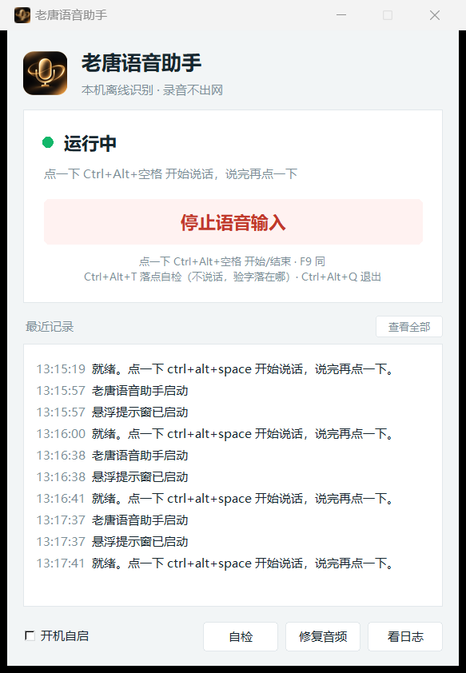
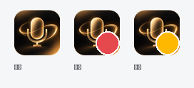

一个跑在你自己电脑上的语音输入工具。中文识别准，说完一两秒出字， 自动粘进刚才那个输入框 —— 微信、Word、浏览器、IDE 都行。
解压即用，模型自带，不用额外下载

不是又一个联网的语音输入 —— 它在本地跑，说错的话只有你听得见。
识别模型就在压缩包里（1.6 GB），断网电脑照样用。录音不上传、不联网， 剪贴板里的内容也只在你自己机器上流转。
用的是 large-v3-turbo 大模型（1.6 GB），不是手机里那种小模型。 长句、专有名词、口头语都能扛，标点也帮你断好。
NVIDIA 显卡上 9 秒的语音 0.7 秒出字（纯 CPU 约 6 秒）。 启动自动检测，没显卡就安静地用 CPU，不会因此用不了。
按一下 Ctrl + Alt + 空格 开始说，说完再按一下结束。 不用一直摁着键，手可以干别的。
屏幕右边缘常驻一条小把手（只露 7 像素，不挡东西）。录音时滑出来， 显示音量条和「字会进 XXX」，还能用鼠标点绿 ▶ / 红 ■ 按钮。
常错的词写进纠错词典，下次自动改对；识别历史能回看、能清空； 系统托盘常驻；想让它在后台自己跑，勾一下「开机自启」。
一个控制台管启停和状态，其余时间它安静待在后台，只在托盘留一个小图标。

先下载解压，然后照着做。只有第 1、2 步需要命令行，其余都是双击。
把 老唐语音助手-分享版.zip（约 1.5 GB）解压到一个空间够的盘， 比如 D:\老唐语音助手。解压后也是约 1.5 GB， 其中 99% 是模型文件。
微信 / QQ 传不了这么大的文件 —— 用网盘分享或 U 盘拷。 解压一次就能用，不用再下模型。
到 python.org 下载 64 位安装包（3.10 ~ 3.14 都行），安装时务必勾选 "Add python.exe to PATH"。
装完开个命令行（Win + R 输 cmd）验证一下：
python --version还是那个命令行，一行装齐（用了清华镜像，国内快）：
pip install faster-whisper sounddevice numpy scipy keyboard pystray pillow -i https://pypi.tuna.tsinghua.edu.cn/simple进文件夹双击 老唐语音助手.bat，弹出控制台后点那个大的 「启动语音输入」按钮。第一次要加载模型，等几秒，听到"嘀"一声就绪。
它不会自己启动 —— 打开就是「已停止」，由你点按钮开始。 关掉窗口也不会停服务，要彻底退按 Ctrl + Alt + Q。
双击 建桌面快捷方式.bat，桌面就会多一个图标。以后直接点它 —— 它指向 pythonw.exe，双击就是控制台，不闪黑窗。
双击 自检.bat，它会录 5 秒并告诉你麦克风有没有拾到声音。 听到"嘀"、屏幕上出现识别结果，就说明装好了。
按了热键却提示"没听到人声"？多半是 Windows 没给麦克风权限： 设置 → 隐私和安全性 → 麦克风 → 打开「让桌面应用访问你的麦克风」。
不想记热键也行 —— 右下角悬浮窗上一直有绿 ▶ / 红 ■ 两个按钮，点它跟按热键一模一样。
| 操作 | 热键 |
|---|---|
| 开始说话 / 说完结束 | Ctrl + Alt + 空格（点一下，不用按住） |
| 同上（备用键） | F9 |
| 落点自检（不说话，往当前输入框粘一句话验位置） | Ctrl + Alt + T |
| 彻底退出 | Ctrl + Alt + Q |
忘了点结束也没关系：录满 90 秒会自动停。识别结果会粘到"点开始时"那个窗口， 所以先点好输入框再按热键；悬浮窗会显示「字会进 XXX」，可以确认到底进哪个应用。
大部分问题在第 1 条和第 2 条里。
先检查 Windows 有没有给麦克风权限：设置 → 隐私和安全性 → 麦克风 → 把「让桌面应用访问你的麦克风」打开。
Win11 有时候默认是关的，关了以后程序根本收不到声音，而且不会报错 —— 看着就像程序坏了。
ctrl+alt+space 可能被别的软件占了（输入法、截图工具、 录屏软件都爱抢这个组合）。
改文件夹里 config.json 的 hotkey， 换一个，比如 "ctrl+shift+v"，重启程序生效。
先点好输入框再按热键。悬浮窗上会显示「字会进 XXX」，可以当场确认。
要排查的话：按 Ctrl + Alt + T 做落点自检 （不说话，直接往当前输入框粘一句话），然后看文件夹里的 voice_input.log。
多半是 Windows 音频服务卡了。控制台里点「修复音频」， 或者右键 修复音频.bat 以管理员身份运行。
程序用全局热键，个别杀软会误报。加信任即可。
热键监听和录音全在本机，不联网、不上传，源码就在文件夹里， 可以自己打开看。
第 3 步的 pip 装到别的 Python 里去了。在命令行 where python 看看装到了哪个，重跑一遍 pip。
已经知道是哪个 python 的话，直接告诉程序：把那个 python.exe 的完整路径写进文件夹里的 engine_python.txt（一行），重启即可； 或者设个环境变量 VOICE_INPUT_PY 指向它。
想更快：有 NVIDIA 显卡的话，装两个 CUDA 包并把 config.json 改成 "device": "cuda" / "compute_type": "float16"， 9 秒语音从 6 秒缩到 0.7 秒：
pip install nvidia-cublas-cu12 nvidia-cudnn-cu12 -i https://pypi.tuna.tsinghua.edu.cn/simple嫌包大：把 config.json 里的 "model" 换成 small， 包体从 1.5 GB 降到约 530 MB —— 代价是中文准确率下降。
控制台左下角勾一下「开机自启」就行，取消也是同一个地方。
解压即用。模型自带，不需要再联网下载任何东西。
SHA-256: c7dadd15bf72f5eb190e629f65bf94e440da2903bdd46fa899d5a00015313982
下载后可以核对上面的 SHA-256，确认文件完整、没被改过。 如果点按钮没反应，直接打开这个网页所在文件夹，双击压缩包就行。